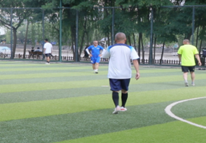
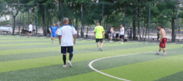

新闻评论
运动不分年龄
文/娜菲莎
党的二十大报告提出“促 进群众体育和竞技体育全面 发展，加快建设体育强国。” 体育强则中国强，国运兴则体 育兴。”体育的内涵和外延丰 富和清晰地站在“两个一百 年”奋斗目标交汇的历史节点 上，建设体育强国目标标注 出体育在新时代的全新定位， 正在谱写梦想奋进新篇章。 《“健康中国2030”规划纲 要》提出了健康中国建设的目 标和任务，加快推动从以治病 为中心转变为以人民健康为 中心，动员全社会落实预防为 主方针，实施健康中国行动， 提高全民健康水平。提升兰州 市全民健身公共服务质量，加 大公共体育设施的开放力度。 《服务规范》对公共体育设施 在“开放要求”方面提出，体 育场馆和区域内的公共体育 场地、设施全年免费或低收费 开放天数一般不少于330天， 每周免费或低收费开放时间 不少于35小时。兰州市政府 积极响应，对各大公共体育设 施做出了明确的规定和要求， 充分保障兰州市民健身活动 的时间和空间，让全民健身人 人参与，推动提升兰州市全民 健身公共服务质量。
兰州市自疫情开放后越 来越多的赛事被举办，推动户 外运动的发展样式越来越丰 富。兰州人民参与体育健身的 也多了起来。各年龄段的人们 都参与了进来。60岁的周兰 珍老人每天早上都坚持去体 育广场跳广场舞，年纪大不能 剧烈的运动和摆弄器材，广场 舞是最好不过的健身选择了。 12岁的付文博每个周末都会 和家人一起来踢足球，因为热 爱所以每次都会踢很久，哪怕 站在一旁看别人踢也很激动。 运动不分年龄，热爱不分年 龄，只要热爱就能找到属于自 己的运动。全民健身不就是这 样人人参与，健身增强，健身 观念融入到每一个人的心中， 健身成为一种习惯，健康成为 一种常态。
球拍击打羽毛球的声音 —12— 唤醒了人们的健身欲望。在健 身中心也有热爱体育运动的 人挥洒着热爱的汗水，大多是 中青年群体沉浸在打羽毛球 的竞争里，她们多为两人或四 人占用一个场地对打。48岁 的傅强和他的球友靠墙坐着 休息，每周两三次会约着好友 一起来打羽毛球。运动不仅能 给我们带来健康的身体而且 能让我们结识志同道合的好 友。
每各年龄段的群体都有 适合自己的运动，不要给自己 的人生和年龄设限，只要有热 爱的心随时开始都不晚。人的 年龄增长之后，运动和不运动 的人差距真的会拉得越来越 大，所以想要让自己在同龄人 当中看起来状态更加的年轻， 想让自己的体力增强，那就从 现在开始锻炼。让健身成为一 种习惯，健康成为一种常态。
